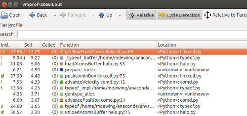
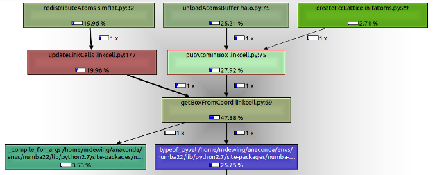
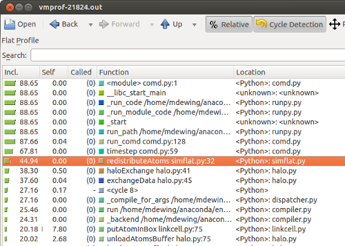
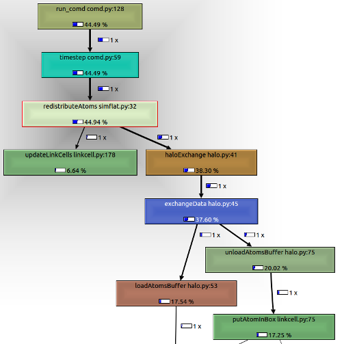

More Performance With Numba
Having acquired a shiny new profiler, it's time to dig into the performance of the Numba version some more.
Picking up from the previous optimizations, I can't seem to reproduce the timing (47 μs/atom) in the that table. Now I get 40 μs/atom.
First step
Run the profiler (vmprofrun comd.py) and display the results in KCacheGrind (kcachegrind vmprof-20664.out)
Sorting by self time, we see getBoxFromCoord at the top:

Also a screen shot of the call graph - getBoxFromCoord gets called from two different places - putAtomInBox and updateLinkCells.

To improve performance here, convert getBoxFromCoord to a free function and put all the attribute references into function arguments.
Before:
def getBoxFromCoord(self, r): ix = int(math.floor(r[0]*self.invBoxSize[0])) iy = int(math.floor(r[1]*self.invBoxSize[1])) iz = int(math.floor(r[2]*self.invBoxSize[2])) return self.getBoxFromTuple(ix, iy, iz)
After:
@numba.njit def getBoxFromCoordInner(x, y, z, invBoxSize, nLocalBoxes, gs): ix = int(math.floor(x*invBoxSize[0])) iy = int(math.floor(y*invBoxSize[1])) iz = int(math.floor(z*invBoxSize[2])) return getBoxFromTupleInner(ix, iy, iz, nLocalBoxes, gs)
(Changing the parameter r to individual components was not strictly necessary.)
And the call sites change (for example) from
iBox = self.getBoxFromCoord([x, y, z])
to
iBox = getBoxFromCoordInner(x, y, z, self.invBoxSize, self.nLocalBoxes, self.gridSize)
This improves performance to 20 μs/atom.
Repeating the same transformation for putAtomInBox gives 18.4 μs/atom.
Second step
Run the profiler again. By self time, loadAtomsBuffer is at the top. Let's look at that in context.
Sort by inclusive time, and we see that the parts of the call tree starting at redistributeAtoms take a significant amount of time.


This part of the code:
- Applies periodic boundary conditions
- Moves atoms to a new cell
- Packs atom into a buffer at source
- Unpacks buffer into atom data structure at destination
This packing/unpacking anticipates the parallel version, which transmits the buffer across processors.
A previous attempt at using numpy records did not work well (and ran into a serious performance regression with numpy 1.10). This time I went with two buffers - one for integers, and one for floating point numbers. This works better, and the performance is now 10.2 μs/atom.
More steps
Continuing the process of profiling, and converting routines to be Numba friendly eventually reached a performance of 2.9 μs/atom. (Wow, this is only about 30% slower than C.)
Modified code is here
The updated performance table is
| Language/compiler | Version | Initial time | Final time | |
|---|---|---|---|---|
| Python | 2.7.10 | 1014 | 1014 | |
| PyPy | 4.0 | 30 | 30 | |
| Cython | 0.23.3 | 729 | 13 | |
| Julia | 0.4.0-rc3 | 87 | 6.1 | |
| Numba | 0.22.1 | 867 | 2.9 | New result |
| C (clang) | 3.7 | 2.2 | 2.2 |
The 'Initial Time' column results from the minimal amount of code changes to get the compiler working.
The 'Final Time' is the time after tuning.
Do note that the Cython, Julia, and Numba results reflect the amount of effort put into optimization. Cython and Julia still need to be improved with the assistance of a profiler (or in Julia's case, a better viewer for existing profile data).
Summary
Using a profiler to guide our optimization efforts has been very helpful.
The Numba results are really promising, but, in addition to creating ugly code, it required an amount of work that I would not want to perform on a regular basis. These transformations are fairly regular, so it should be possible to incorporate them into Numba. Alternately, if doing so in a safe manner inside the compiler is difficult, some sort of automated AST transformation of the source should be possible.
As the optimization process proceeds on this code, increasing amount of time is being spent in the core routine, computeForce, (as it should), and we will need to move beyond a function-level profiler to look for optimization opportunities.
Comments
Comments powered by Disqus